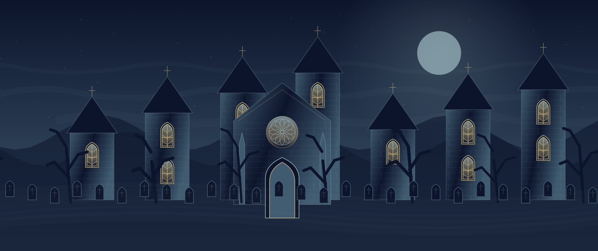

AN ORIGINAL GOTHIC ARCADE ADVENTURE
灰燼の誓い
夜明けまでに、六つの封印を。

✧
ASHEN VOW
その誓いは、
闇を越える。
鎧は一度だけあなたを守る。
魔物の予兆を読み、銀の投槍で道を開け。
非公式オリジナル作品
Codexのクラウドセッションで制作
← → / A D 移動 · SPACE 跳躍 · Z / J 投擲
↓ しゃがむ · ↑↓ はしご · ESC ポーズ
入力と音声はゲーム開始時に有効になります。
01 — 06
墓地 / 廃村 / 水路 / 魔塔 / 炎の城塞 / 魔城中枢
月の巡礼操作・クレジット
キーボード、標準ゲームパッド、複数タッチ対応。ゲームパッドは左スティック・十字キーで移動、下側ボタンで跳躍、左側で投擲。各地域の中央にチェックポイント。武器の紋章を拾うと装備が変わります。
カプコン『魔界村』（1985年アーケード版）のゲーム性を参照した非公式の独自作品です。原作の画像・音楽・ROMは使用していません。各版のセーブは別々です。